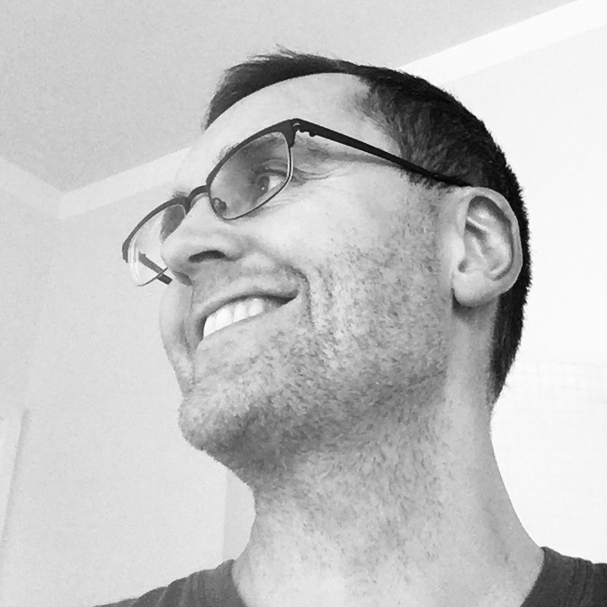

Om mig
Hej! Roligt att du hittat hit. Jag heter Sebastian Nyberg. Förr tecknade jag serier, nu för tiden skriver jag böcker. Jag bor i Helsingfors med min familj. Jag skriver inte på heltid, utan jobbar som webbutvecklare till vardags.
Rigelstenen
I april 2021 utkom min första bok Rigelstenen på Schildts&Söderströms förlag. Det är en fantasyroman för tonåringar. Om du tycker om mysterier, hemliga sammanslutningar, magiska föremål och gamla gudar är det här precis den rätta boken för dig.
Recensioner
Lasse Garoff, Svenska YLE: "Rigelstenen är ett mastigt, medryckande och ruskigt fantasyäventyr för ungdomar"
Maria Lassén-Seger, Hufvudstadsbladet: "En riktigt ruskig bladvändare. Sådan är Sebastian Nybergs debut för unga läsare, Rigelstenen. ... Nybergs tajta intrigbygge levererar upprepade överraskningar, vilket genererar ett lustfyllt lässug."
Sofia Sjö, Åbo Underrättelser: "Rafflande finlandssvensk tonårsfantasy. ... Med sin debutroman visar Sebastian Nyberg att även han som historieberättare är värd att uppmärksammas. Har ni inte läst Rigelstenen redan är en mörk novemberkväll en utmärkt tid att krypa ner i soffan och låta sig sugas med i ett nervkittlande äventyr. "
Adjutantens hemlighet
Min andra bok Adjutantens hemlighet kom ut på Schildts & Söderströms i augusti 2022. Det är en äventyrsbok för barn i åldern 8-12 och handlar om fyra kusiner på skattjakt. Jag ville skriva en bladvändare som var inspirerad av de klassiska Tintinäventyren. Rigelstenen var en ganska tung bok att redigera, så jag behövde skriva någonting enklare efter den.
Länkar och kontakt
E-post: basse(at)sebastiannyberg.com
Mitt förlag hittar du här.
Du kan köpa mina böcker från till exempel Adlibris.